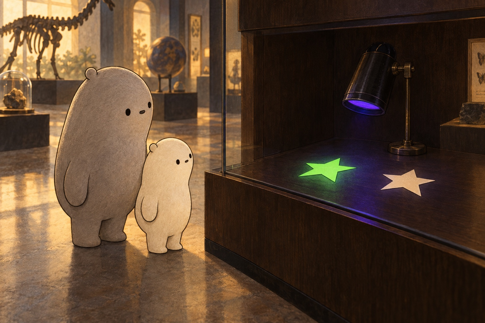

01Why does only one star glow?

Look closer. Find the two paper stars. What looks the same? What looks different? Keep a guess before opening the explanation.
A little explanation. The glowing star has a fluorescent coating. It takes in light from the black light and gives out green light we can see. The other star has no coating that makes a noticeable glow in this model. Shape alone does not decide which object glows.
Try this. Point to the part you would change to test your guess in a drawing: the lamp, the star's shape, or its material.